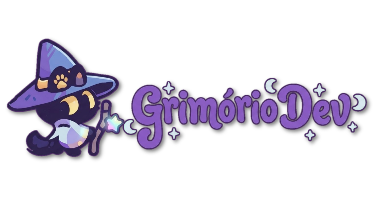
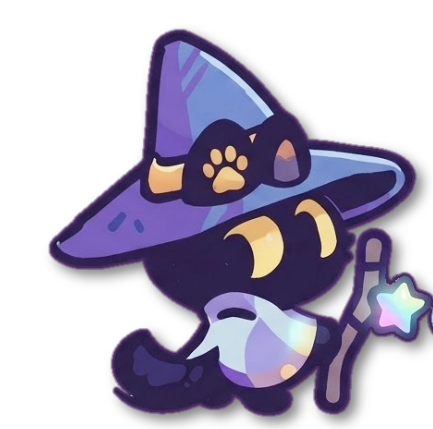

Conectando esforço, gamificação e aprendizado: o Grimório Dev transforma a forma como você aprende e conquista seu espaço no mercado.
Nossa História (Quem somos e por que existimos)
Aprender a programar pode parecer, no começo, como tentar decifrar um idioma desconhecido cheio de regras complexas. Foi pensando em tornar essa jornada mais leve e intuitiva que nasceu o Grimório Dev.
Idealizado por estudantes de tecnologia dentro do programa Transforme-se, o projeto surgiu de uma necessidade real: criar um ambiente de estudos que fugisse dos materiais densos e cansativos.
Nosso objetivo é unir organização, prática constante e uma pitada de magia para ajudar futuros desenvolvedores a dominarem a programação passo a passo! Sem perder a motivação no meio do caminho.

Conheça o nosso mascote - Deninho
Este é o Deninho, nosso mascote e companheiro da sua jornada! Um gatinho mágico que representa a curiosidade, a criatividade e a vontade de aprender.
Ele está aqui para tornar sua jornada no Grimório Dev ainda mais divertida, incentivando você a explorar novos conhecimentos e superar desafios.
Pilares da plataforma
- Resumos diretos ao ponto: Esqueça os textos intermináveis. Reunimos os principais conceitos de desenvolvimento em guias claros, estruturados e fáceis de consultar sempre que bater aquela dúvida no código.
- Quizzes e desafios: Na programação, a prática é o que realmente fixa o aprendizado. Nossos quizzes interativos permitem testar seus conhecimentos na hora e identificar pontos de melhoria de forma dinâmica.
- Gamificação e ranking: Estudar sozinho não precisa ser monótono. Com nosso sistema de pontuação e ranking, cada aula revisada e cada acerto fazem você subir de nível, transformando a rotina de estudos em um hábito consistente.
Nossa missão
Acreditamos que a tecnologia deve ser uma porta aberta para todos. O Grimório Dev é uma plataforma feita de estudantes para estudantes, desenhada para guiar desde quem está escrevendo seu primeiro "Hello, World!" até quem busca revisar fundamentos importantes do dia a dia dev.
Pronto para desvendar os próximos códigos e evoluir suas habilidades? Explore nossos resumos, teste sua lógica nos quizzes e comece sua jornada agora mesmo!